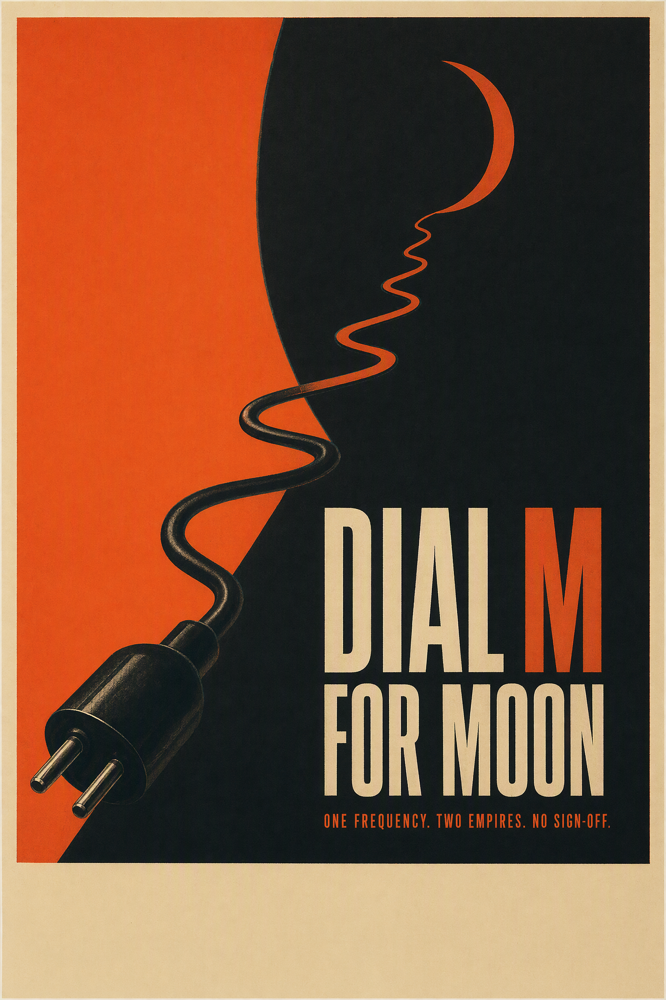
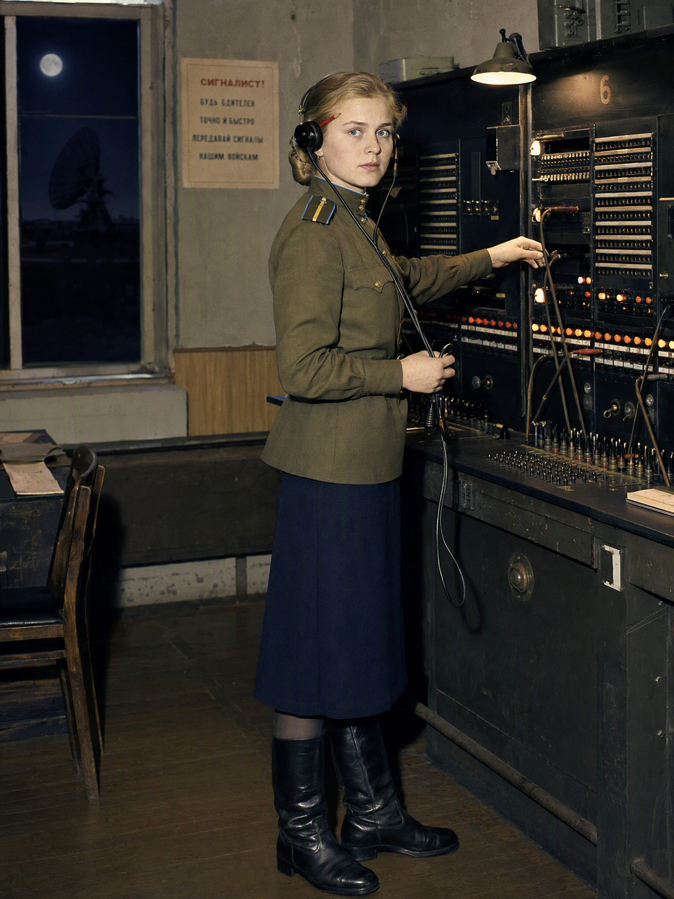
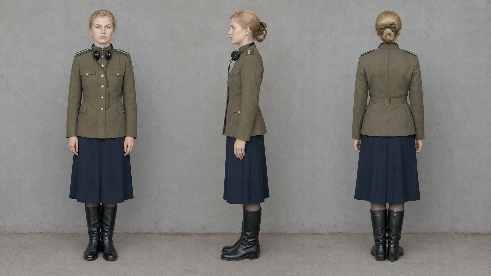

1959 Cold War thriller — Object 10-D, a secret Soviet lunar listening post. A switchboard operator intercepts
an American astronaut's mayday that officially never happened, and both empires want the tape.
Jev rank gate: ADVANCE 7.85/15 (hook 2.58 · era 3.46 · engine 1.81) · Session spend: 386 credits · Balance: 5,672
CAN KEY ART — poster v1 (human override of Cannon gate)

gpt-image-2 · 2:3 · 35 credits
Cannon gate on vision description: buy 0.67 · unique 0.86 ·
era 0.33 (reads as modern homage) → gate said KILLED ·
user APPROVED as canon — homage-vs-artifact is a human call.
CHARACTER BIBLE — Valentina “Valya” Orlova, 8/8 pages
Starshina, Soviet Signal Troops, 27. Anchor page 1 first; pages 2–8 generated from page 1 as reference.
All 8 MD5 hashes unique (no duplicate cascade). QC amendment: left-eyebrow scar is
script-only canon — two render attempts failed; ribbon soft-visible by design.

01 · PRIMARY HERO REFERENCE — anchor. Insignia, piping, headset, red pencil: pass. Scar: absent after 2 attempts → demoted to script canon.

02 · ORTHOGRAPHIC TURNAROUND — front/side/back. Same woman all views; bun + ribbon legible from behind: pass.